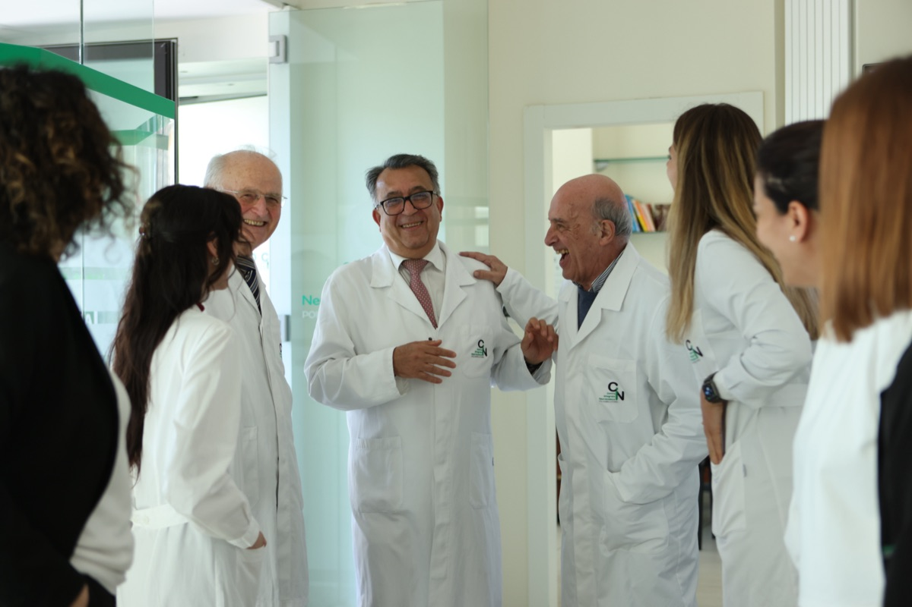

Una visione integrata per la cura del paziente neurologico
"La neurologia non può essere isolata: il paziente va compreso nella sua interezza"
Il Dott. Saeid Saadi ha maturato la convinzione, nel corso di decenni di pratica clinica in Italia e negli Stati Uniti, che la neurologia moderna non possa essere praticata in isolamento. Il sistema nervoso non è separato dal resto della persona: le sue manifestazioni patologiche coinvolgono il corpo, la mente, le abitudini alimentari, la postura, la storia emotiva del paziente. Trattare solo il sintomo neurologico, ignorando questo contesto, significa offrire al paziente una risposta parziale.
Questa convinzione si traduce in una pratica quotidiana: ogni paziente che si rivolge al Dott. Saadi viene valutato nella sua interezza. La diagnosi neurologica è il punto di partenza, non il punto di arrivo. Il passo successivo è costruire, insieme al paziente e agli altri specialisti del Poliambulatorio CIN, un percorso di cura che risponda ai bisogni reali della persona.
Al Poliambulatorio CIN di Rimini, fondato nel 2013, il dialogo costante tra professionisti di diverse discipline è una realtà quotidiana. Non una promessa di collaborazione futura, ma un metodo consolidato che produce risultati documentabili.
Cinque discipline integrate per una presa in carico completa del paziente neurologico. Ogni specialista contribuisce con la propria competenza a un piano condiviso.
Il cuore del percorso. Il Dott. Saadi guida la diagnosi neurologica, definisce il quadro clinico di partenza e coordina il piano terapeutico. La valutazione neurologica integrata è il filo conduttore di ogni percorso di cura.
Molti disturbi neurologici si intrecciano con la salute mentale. La collaborazione con lo psichiatra permette di gestire correttamente le comorbilità, evitare trattamenti contraddittori e affrontare la componente psichica di condizioni come l'epilessia, le cefalee croniche o i disturbi funzionali.
Il supporto psicologico clinico è parte integrante del percorso per numerose patologie neurologiche. Dalla gestione dell'ansia correlata ai disturbi funzionali alla riabilitazione cognitiva post-ictus, lo psicologo lavora in sinergia con il neurologo su obiettivi condivisi e misurabili.
La riabilitazione neuromotoria è spesso componente essenziale del percorso. Il fisiatra e il fisioterapista specializzato intervengono nel recupero funzionale post-neurologico, nella gestione dei disturbi del movimento e nella rieducazione motoria per i pazienti con disturbi funzionali.
L'alimentazione influenza direttamente alcune patologie neurologiche: dalla frequenza delle crisi migrainose alla salute del sistema nervoso periferico, fino all'impatto metabolico su condizioni neurodegenerative. Il nutrizionista clinico collabora alla definizione di protocolli alimentari personalizzati integrati nel piano terapeutico.
Un metodo strutturato in quattro fasi, pensato per garantire continuità di cura e coerenza terapeutica dall'accesso al follow-up.
La prima visita con il Dott. Saadi è dedicata a raccogliere la storia clinica completa del paziente, comprenderne il contesto di vita e identificare le aree di intervento. Vengono valutati non solo i sintomi neurologici ma anche i fattori correlati: qualità del sonno, stress, alimentazione, storia psicologica.
Sulla base della valutazione, vengono attivati gli specialisti necessari. Il neurologo condivide con loro le informazioni cliniche rilevanti e riceve in cambio contributi diagnostici specifici. La diagnosi finale è il risultato di un confronto, non di una valutazione isolata.
Il piano terapeutico viene costruito con il paziente, spiegandogli il razionale di ogni intervento, le tempistiche attese e gli obiettivi misurabili. Quando sono coinvolti più specialisti, ciascuno conosce il contributo degli altri e agisce in coerenza con il piano complessivo.
Il percorso non termina con la prescrizione. Visite di controllo periodiche permettono di verificare i progressi, adattare le terapie e rispondere prontamente a eventuali cambiamenti del quadro clinico. Il paziente non è mai lasciato solo nel percorso.

La visione clinica del Dott. Saadi si è formata attraverso un percorso internazionale che ha attraversato l'Italia e gli Stati Uniti. La formazione neuropsichiatrica negli USA ha permesso di entrare in contatto con approcci diagnostici e terapeutici d'avanguardia, in un contesto accademico e clinico di livello mondiale.
Negli Stati Uniti il Dott. Saadi ha approfondito in particolare le tecniche di neurofeedback e biofeedback, strumenti terapeutici oggi riconosciuti dalla letteratura internazionale per il trattamento di cefalee croniche, disturbi d'ansia, disturbi del sonno e alcune forme di epilessia. Queste metodologie, ancora poco diffuse in Italia all'epoca del suo ritorno, sono diventate parte integrante dell'offerta terapeutica del Poliambulatorio CIN.
Al rientro in Italia, il riconoscimento da parte dell'Istituto Neurologico Carlo Besta di Milano — uno dei centri di eccellenza neuroscientifico più autorevoli del paese — ha sancito la validità di questo approccio innovativo nel contesto clinico italiano.
Nel 2013 il Dott. Saadi ha fondato il Poliambulatorio CIN (Centro di Innovazione Neurologica) a Rimini, con l'obiettivo esplicito di portare nella realtà locale standard di cura neuropsichiatrica di livello internazionale, integrando le competenze di più specialisti in un modello di lavoro davvero coordinato.
Scopri la storia del Dott. Saadi →